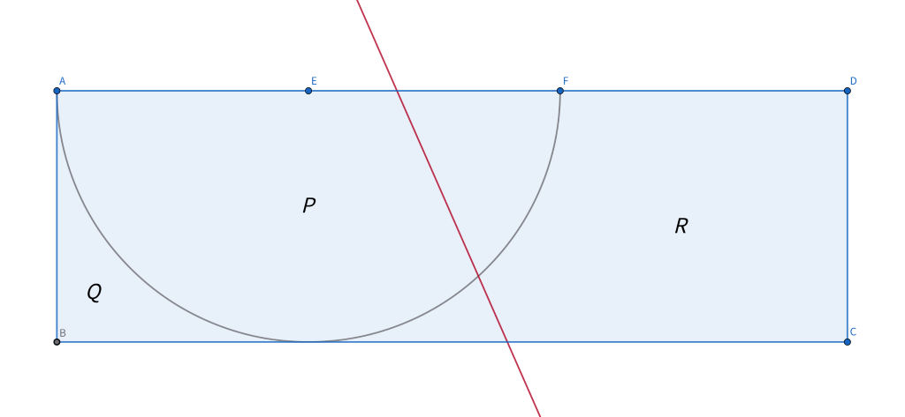
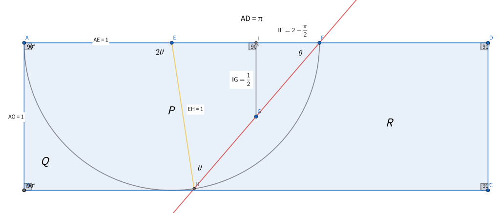

下の図形は次の条件を満たす。
使用ツール:Geogebra
線分\(AF\)(両端を含む)上を通る1本の直線で長方形\(ABCD\)の面積を2等分する。
分割されてできる2つの図形のうち、点\(B\)を含むほうを領域\(S\)とする。
このとき、領域\(P\)、領域\(S\)の共通部分の面積としてありうる最大値を求めよ。
長方形\(ABCD\)の面積を2等分する直線を\(l\)とする。
(作成中)
(作成中)
領域\(P\)、領域\(S\)の共通部分の面積が最大になるときについて考える。
領域\(P,Q,R\)の境界である曲線を\(m\)とする。
直線\(l\)と曲線\(m\)の交点を\(H\)とし、点\(E\)と点\(H\)を結ぶ。
\(∠HFE = \theta\) (\(0\lt\theta\lt\dfrac{\pi}{2}\))とすると、\(∠HEA = 2\theta\)
点\(G\)から直線\(AD\)におろした垂線と直線\(AD\)との交点を\(I\)とする。
このとき、領域\(P\)、領域\(S\)の共通部分の面積は$$ \dfrac{1}{2}\times 2\theta + \dfrac{1}{2} \sin (\pi - 2\theta) = \theta + \dfrac{1}{2} \sin 2\theta = \theta + \sin \theta \cos \theta = \theta + \tan \theta \cos^2 \theta $$
条件から、長方形\(ABCD\)の面積は領域\(P\)の面積\(\dfrac{\pi}{2}\)の2倍だから\(AD=\pi\)
直角三角形\(GIF\)に注目して$$ \tan \theta = \dfrac{\dfrac{1}{2}}{2-\dfrac{\pi}{2}} = \dfrac{1}{4-\pi} ・・・(＊)$$
\(\tan^2 \theta + 1 = \dfrac{1}{\cos^2 \theta}\)から$$ \dfrac{1}{\cos^2 \theta} = 1 + \tan^2 \theta = \dfrac{{(4-\pi)}^2+1}{{(4-\pi)}^2} $$
$$ \cos^2 \theta = \dfrac{{(4-\pi)}^2}{{(4-\pi)}^2+1} $$
(＊)から$$ \tan \theta \cos^2 \theta = \dfrac{4-\pi}{{(4-\pi)}^2 +1} = \frac{4-\pi}{\pi^2-8\pi+17} $$
(＊)から$$ \theta = \arctan \dfrac{1}{4-\pi} (∵0\lt\theta\lt\dfrac{\pi}{2}) $$
ゆえに、領域\(P\)、領域\(S\)の共通部分の面積の最大値は $$ \arctan \dfrac{1}{4-\pi} + \frac{4-\pi}{\pi^2-8\pi+17} ・・・(答) $$
ちなみに、\(\theta ≒ 49° \)